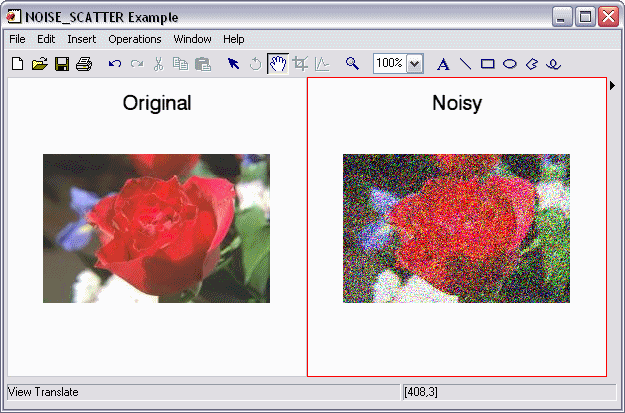

The NOISE_SCATTER function introduces noise into an image by applying normally distributed noise to the entire image. In the normal distribution, a large number of pixels will have smaller amounts of noise applied to them, while fewer pixels will have larger amounts of noise applied to them.
This routine is written in the IDL language. Its source code can be found in the file noise_scatter.pro in the lib subdirectory of the IDL distribution.
Result = NOISE_SCATTER(Image [, /CORRELATED_NOISE] [, LEVELS=value] [, NOISE_FACTOR=value] [, SEED=value])
Result is an array of the same type and dimensions as Image.
A two dimensional or three dimensional array containing the input image. Two dimensional arrays are treated as single channel images. For three dimensional arrays, the first dimension contains the color channels (Pixel Interleave).
Set this keyword to apply the same noise distribution to all channels of the image. By default, a new noise distribution is generated for each channel.
Set this keyword to a 3-element floating-point array containing noise scale factors for each image channel. Values must be in the range [0.0 to 1.0]. The default is [0.5, 0.5, 0.5].
Set this keyword to a scalar noise scale factor to be applied to all channels. A typical value is half the range of the image data. The default value is 127 (suitable for BYTE images).
Set this keyword to the seed value for the random number generator. This keyword is used in the same way as the SEED argument for RANDOMU.
This example introduces noise to a test image:
; Read an image:
file = FILEPATH('rose.jpg', SUBDIR=['examples','data'])
IOPEN, file, image
; Introduce noise to the image:
image_noisy = NOISE_SCATTER(image)
; Display the images side by side:
IIMAGE, image, VIEW_GRID=[2,1], VIEW_TITLE='Original', $
DIMENSIONS=[600, 300], WINDOW_TITLE='NOISE_SCATTER Example', $
/NO_SAVEPROMPT
IIMAGE, image_noisy, /VIEW_NEXT, VIEW_TITLE='Noisy'
; Increase the text size
ISETPROPERTY, 'text*', FONT_SIZE=40
The resulting images appear as follows:
|
 |
|
6.4 |
Introduced |